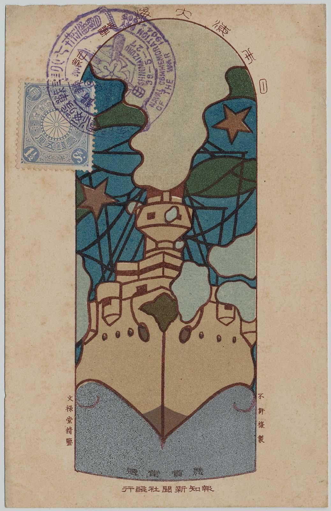

WORKS FROM THE WRITINGS
The postcards featured in the "WRITINGS" section of the website. Included in the gallery to focus more on the work itself rather than the written content.

POSTCARD HISTORY ART
Depictions of the craze for postcards in the early twentieth century, the development of the postal service, the growth of the printing industry, and the appearance of shops specializing in the sale of cards.

THE RUSSO-JAPANESE WAR
Images of military engagements as well as of celebrations on the home front at the conclusion of the conflict, when Japan established itself as a major international power.